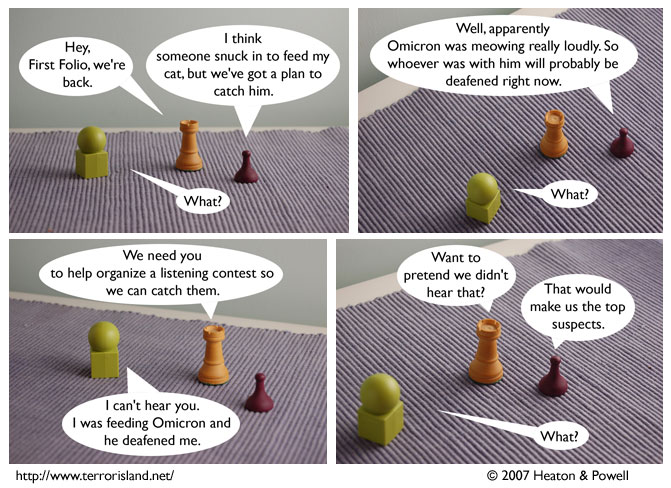

Strip #146
— Friday, May 18, 2007
Stephen was really looking forward to the listening contest.
Notes, Thoughts, &c.
Ben’s Notes
Finally, they’re done with the nametags. I’ve had to keep those tiny bits of paper around and in good condition for about two months now. Sid’s kept falling off whenever I took him over to the university for CotEU scenes.
Lewis’s Notes
I was just thinking, it probably isn’t true that everyone loves a slinky.
On the other hand, I really do believe that nobody doesn’t like Sarah Lee.